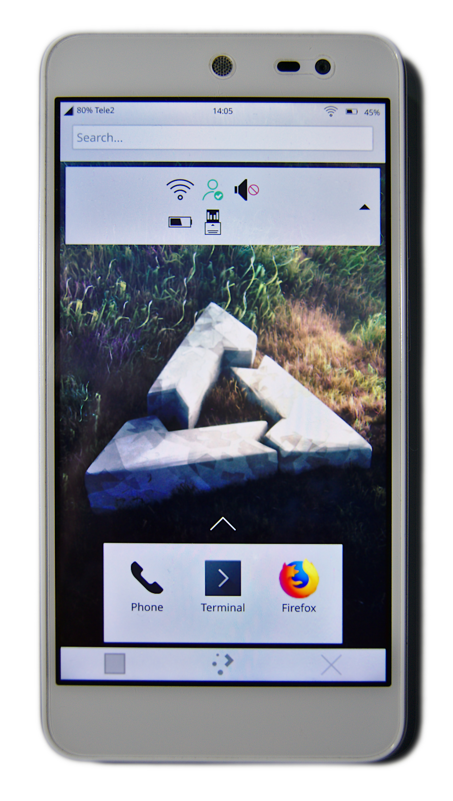

Wileyfox Swift (wileyfox-crackling)
|
 Wileyfox Swift running Plasma Mobile | |
| Manufacturer | Wileyfox |
|---|---|
| Name | Swift |
| Codename | wileyfox-crackling |
| Released | 2015 |
| Category | community |
| Original software | Android |
| Original version | 5.1.1 |
| postmarketOS kernel | Mainline |
| Hardware | |
| Chipset | Qualcomm Snapdragon 410 (MSM8916) |
| CPU | Quad-core Cortex-A53 1.2 GHz |
| GPU | Adreno 306 |
| Display | 1280x720 IPS |
| Storage | 16 GB |
| Memory | 2 GB |
| Architecture | aarch64 |
| Type | handset |
{kind=link}
| USB Networking |
Works
|
|---|---|
| Flashing |
Works
|
| Touchscreen |
Works
|
| Display |
Works
|
| WiFi |
Works
|
| FDE |
Works
|
| Mainline |
Works
|
| Battery |
Works
|
| 3D Acceleration |
Works
|
| Audio |
Works
|
| Bluetooth |
Works
|
| Camera | |
| GPS |
Works
|
| Mobile data |
Works
|
| SMS |
Works
|
| Calls |
Works
|
| USB OTG / USB-C Role switching |
Partial
|
| NFC |
Unavailable
|
| Accelerometer |
Works
|
|---|---|
| Magnetometer | |
| Ambient Light | |
| Proximity | |
| Hall Effect | |
| Barometer | |
| Power Sensor | |
| Camera Flash | |
|---|---|
| Keyboard | |
| Touchpad | |
| USB-A | |
| HDMI/DP | |
| Ir TX |
Unavailable
|
| Ir RX | |
| Stylus | |
| Haptics | |
| Ethernet | |
| FOSS bootloader | |
|
This device is based on the Snapdragon 410. See the SoC page for common tips, guides and troubleshooting steps |
Wileyfox Swift is a fairly popular device that was initially shipped with CyanogenOS. It is based on Qualcomm Snapdragon 410 SoC which has great mainline Linux support.
This device, as well as multiple other devices under a common name "Google Android One 2nd Gen (google-seed)" all use same "Longcheer l8150" design, so all of those devices are supported with this port.
Contributors
Maintainer(s)
Users owning this device
- Afacanc38 (Notes: Google One 2th Gen (General Mobile GM5))
- Alexey Vazhnov (Notes: Two black devices)
- DancesWithCycles (Notes: black coat: display broken, repair needed)
- DancesWithCycles (Notes: white coat: bootloader lk2nd installation failed)
- Lloir
- Minecrell
- MrRocket (Notes: Black Unit)
- Prowindows62 (Notes: dual sim, seed, touchscreen and display barely works)
- TravMurav (Notes: Both black and white, as well as seed)
How to enter flash mode
-
Recovery: Power on the device with both
PowerandVolume Downbuttons. -
Stock fastboot: Power on the device with both
PowerandVolume Upbuttons. You only need this to install lk2nd. -
lk2nd Fastboot: Power on the device. After it vibrates/the display shows up, hold
Volume Down.
| Note: Pressing the keys too early will cause the stock bootloader to handle the key combination. You will end up in the wrong Fastboot interface. |
Note: google-seed devices have opposite functions for keys in stock bootloader, Hold Volume Down for fastboot. The device may not have any visible indication for fastboot mode. |
Installation
- You need to enable OEM unlocking in the developer settings of your android/cynogen installation. Otherwise, the Cynogen recovery will refuse to boot. However, you are allowed to flash the rootfs. Kernel, Recovery and bootloader not.
- You may need to unlock the bootloader with
fastboot oem unlock-go. (This may be the only step required on seed devices before you can flash lk2nd) - Make sure that you have the latest Cyanogen bootloader. If necessary, you can use the
flash-radio.shscript from https://androidfilehost.com/?fid=10763459528675591497. - Install lk2nd (alternative bootloader that handles certain mainline quirks like setting up the WiFi/BT MAC addresses. Keep in mind that you have to install pmOS components with lk2nd, not original fastboot)
- Follow Qualcomm_Snapdragon_410/412_(MSM8916)#Installation.
Known Bugs and Workarounds
- Multi-touch doesn't work
This is a known issue: The touch controller sends the events in a different format that the driver can decode. Fix is WIP.
Battery and charging
Wileyfox Swift uses LBC charger in pm8916. A simple driver was added to the kernel to enable and configure charging. Compared to downstream driver that makes some decisions in software, this driver leaves charging entirely to hardware since, according to documentation, LBC can work on it's own after it was initially configured.
| Note: As with any device, it's not recommended to leave your phone on charger for prolonged periods of time, leave it unattended or charge it in conditions that may cause overheating. |
This device uses "Voltage Mode BMS" (VM-BMS) to estimate State Of Charge (SOC) of the battery. Compared to other devices that have additional hardware (Fuel Gauge) to measure SOC, VM-BMS is mostly implemented in software. Accurate SOC estimation requires complex math algorithms and, ideally, should be implemented as userspace program. As a temporary solution, vm-bms driver was implemented. It uses simple, less accurate algorithm to estimate SOC. This algorithm works well enough to show approximate SOC in normal use but may fail in some unusual cases.
USB Host (OTG)
This device doesn't support OTG so it can't provide power or even detect normal OTG adapters but it is still possible to use USB in host mode. This requires custom adapter that will provide power to your USB device. In order to detect such adapter we abuse the fact that USB ID pin in microUSB is used to force EDL mode but since it is pulled down we can't detect normal OTG adapters with it. (USB_ID on those adapters is connected to ground when we can only detect 5v on this pin) So your custom adapter not only should provide external power but also should provide logical-high signal to USB_ID. This can make such adapter dangerous for other devices so you should avoid plugging it anywhere else. You can put a resistor between 5v and USB ID to make it a bit safer. Please note that device will boot into EDL mode if you leave such adapter in while powering on the device. EDL have no visible indication and you will need to pull battery out in order to reboot.
Edge testing list
The following list is taken from the Release testing template and is intended for tracking the device support level in better detail.
Device testing list.
- [✅] Device boots and it's possible to login (password: 147147)
##### Hardware:
- [✅] Automatic screen rotation works
- [✅] Brightness control works
- [✅] Light sensor (Automatic brightness) works
- [🟨] Touch (with multitouch) works (MT is broken)
- [✅] Buttons work
- [✅] Haptic feedback works
- [✅] Notification led works
- [✅] Fuel gauge works
- [✅] Charger detected and charging works
- [🟨] USB OTG / host mode (HW doesn't support OTG, workaround is used)
- [✅] Torch / flashlight
- [✅] GPS works
- [✅] Magnetometer or compass works
##### Chipset specific features:
- [✅] SMP works (all CPU codes detected)
- [🟨] Frequency scaling works, not full range
- [🟥] Device suspend works
- [🟨] Hardware video encoder/decoder works (encoder doesn't work, issues with the decoder)
- [🟨] GPU/3D acceleration works (minor issues in some applications)
##### Sound:
- [✅] Speakers, headphones and earpiece work
- [✅] Headphones selected automatically when plugged in
- [✅] Microphone works
##### Connectivity:
- [✅] Bluetooth
- [✅] WiFi
- [✅] Cellular:
- [✅] Mobile data works
- [✅] SMS works
- [✅] Making a call works
- [✅] Receiving a call works
- [✅] Proximity sensor works
##### Camera: (no drivers yet)
- [🟥] Front camera
- [🟥] Rear camera
- [🟥] Lens actuator (autofocus) works
See also
- pmaports!485 Initial merge request